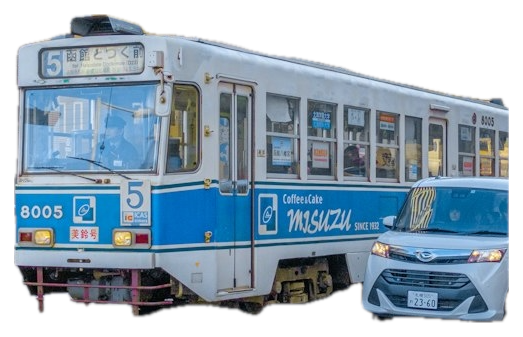

函館一の
笑顔を
募集します。
夜景と海とごはんの街、函館。
その魅力を、旅で来たお客様に
一緒に伝えてくれませんか？
はじめての人も大丈夫です。

写真は仮の素材（Unsplash）。撮影した本人の写真に差し替えますどんなホテル？
フロントの仕事
「夕飯どこがいい？」「どこを見ればいい？」と聞かれたら、あなたの好きな店や場所をぜひ案内してください。仮
お部屋の案内、お会計、鍵の受け渡し。最初の2週間は先輩と一緒に覚えます。仮
予約サイトの管理画面で、その日の予約を確かめます。
ホテルの様子やお知らせを投稿します。
1日の流れ（早番の例）仮
先に伝えておく、
大変なこと
15時〜18時は列ができることがあります。この時間は2人以上で立つようにしています。仮
この時期は、シフトに入れる日を早めに相談させてください。仮
話せなくても大丈夫。よく使う言い回しをまとめた紙をフロントに置いています。仮
ホテルの経験がない人が、
多く働いています
さまざまな仕事から来た人がいます。仮前の仕事で身につけたことが、そのまま活きる仕事です。
M.K 2023年入社
口コミでスタッフ対応に高い評価をいただいた時や、フロントスタッフ同士の連携がうまくいった時にやりがいを感じます。
LCグループ「スタッフ紹介」より
名前（イニシャル）
混んでいる時に何から片づけるか。居酒屋で覚えた段取りが、チェックインの時間にそのまま使えています。
名前（イニシャル）
お客様の様子を見て声をかけるのは、販売と同じでした。
募集の条件
| 時給 | 1,200円〜仮22時〜翌5時は25%増し。試用期間中も同じ |
|---|---|
| 雇用形態 | アルバイト・パート |
| 契約期間 | 6か月（更新あり）仮 |
| 更新の基準 | 勤務の状況と、ホテルの業務量で判断。通算の上限なし仮 |
| 試用期間 | 3か月（条件は同じ） |
| 仕事内容 | フロント業務全般変更の範囲：ホテル運営の業務全般仮 |
| 勤務地 | LC五稜郭ホテル（函館市本町29-26）変更の範囲：函館市内の当社施設仮 |
| 勤務時間 | 7:00〜22:00の間で1日4〜8時間仮6時間を超える日は45分の休憩 |
| 時間外 | あり（月5時間ほど）仮 |
| 休日 | シフト制。希望を聞いて決めます |
| 社会保険 | 勤務時間に応じて加入（雇用・労災・健康・厚生年金） |
| 交通費 | 規定により支給。車通勤は相談仮 |
| 受動喫煙 | 屋内禁煙（喫煙所あり）仮 |
| 年齢 | 不問 |
| 募集する会社 | 株式会社リンクル（LCグループ） |
この条件は2026年11月時点のものです。毎月1回、内容を確認しています。
うれしい制度
ここに並べたものは、すべて例です。
働き始めるまで
このページのフォーム、または電話で。
電話かSMSで、面接の日を決めます。仮
ホテルの中も見てもらいます。見学だけでも大丈夫。
最初の2週間は先輩と一緒に入ります。仮
よくある質問
大丈夫です。今のスタッフも、ほかの仕事から来た人が中心です。
必須ではありません。話せる方には、海外のお客様の対応をお願いすることがあります。
働ける日数と時間を相談して決めます。仮
相談してください。市電「五稜郭公園前」からは徒歩3分です。仮
この募集は日中のみです。夜勤は別の募集になります。仮
まずは気軽に、
1分で応募
履歴書は面接の日に持ってきてください。2日以内にご連絡します。
送信する